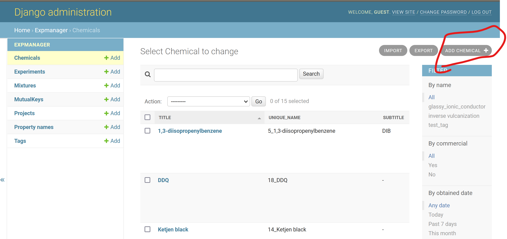
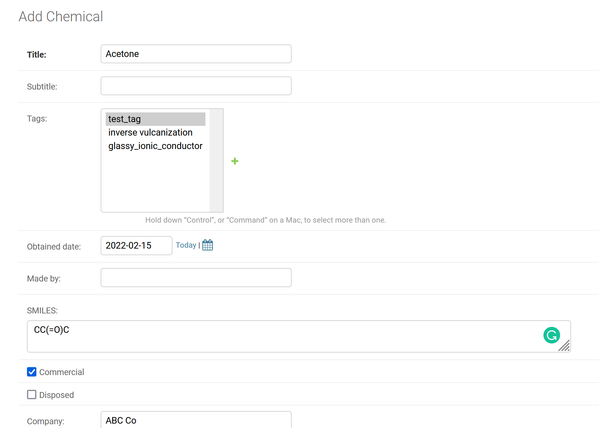
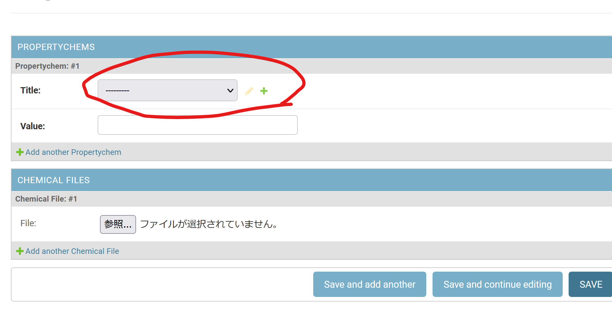
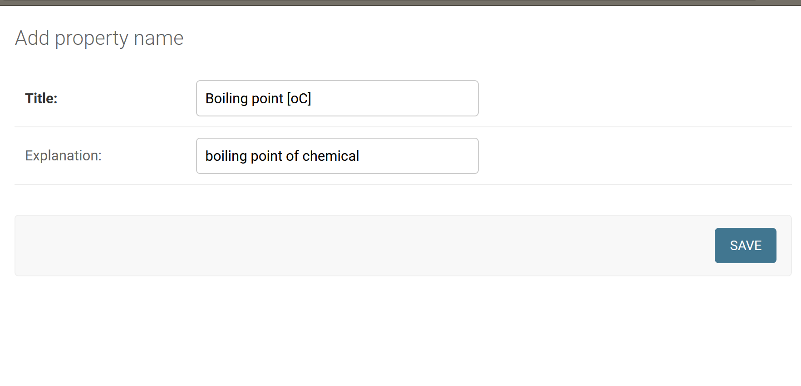
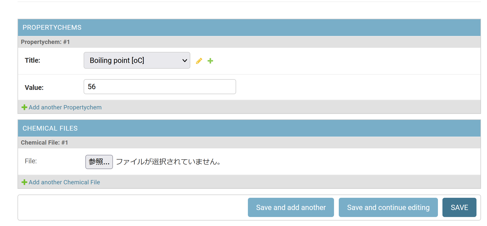

4. Register chemicals¶
4.1. Overview¶
Here, you can register chemical reagent data such as…
Structures
Currently compatible with
molecules (SMILES)
polymers (special format)
Properties
Obtained date, company, …
4.2. Add new reagent¶
Click “Add Chemical” button to create a new record 
In this tutorial, we will add the following compound.
Acetone
Obtained from ABC Co.
Boiling point of 56 oC
The basic properties can be inputted as follows 
Here, you can set your favorite “Tag”
This is very useful to extract selected records during exporting processes
4.3. Set chemical properties¶
Move to “PROPERTYCHEMS” for the addition of properties
In order to add a new property, clock “+” button.

A new window will open to edit the proeprty name
Set properties as follows, for example

4.4. Save record¶
After inputting boiling point, click “Save” button to finish recording 